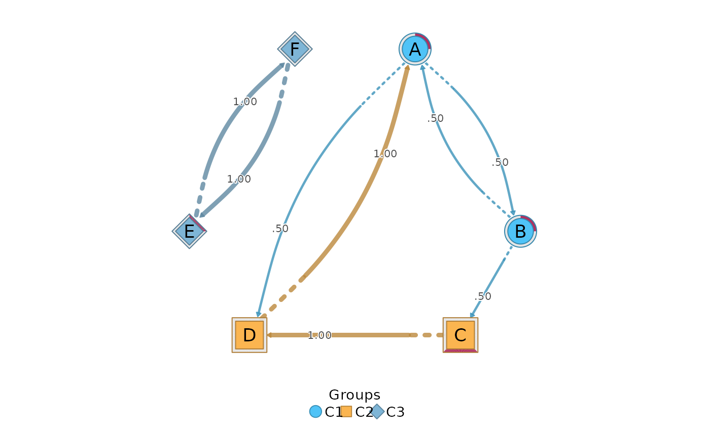

as_htna() builds the full node-level network from the original data
with build_network() and attaches a cluster to every node, returning a
single htna network: every state is a node, and the clusters group the
nodes. It is the node-level counterpart of build_mcml(): where
build_mcml() collapses the network to a cluster-level (macro) summary,
as_htna() keeps every node and every transition, including the
between-cluster transitions an mcml keeps only in aggregate. It takes
data with a clustering, an mcml (which supplies the clustering, and
often the data), or a fitted net_mmm.
The result is an ordinary netobject, so the inference verbs apply to it
(bootstrap_network(), net_centrality(), permutation()), and
cograph draws it as a grouped network:
cograph::plot_htna(as_htna(data, clusters)).
Usage
as_htna(x, clusters = NULL, method = "relative", ...)
# S3 method for class 'mcml'
as_htna(x, clusters = NULL, method = "relative", data = NULL, ...)
# S3 method for class 'net_mmm'
as_htna(x, clusters = NULL, method = "relative", ...)
# Default S3 method
as_htna(x, clusters = NULL, method = "relative", ...)Arguments
- x
The data, in any form
build_network()accepts (a sequence data frame, an event log, an edge list, a transition matrix, anetobjector atnamodel); or anmcmlobject, which provides the cluster membership and, when it was built from a wide sequence frame or an event log, the data as well (seedata); or anet_mmmfitted bycluster_mmm()on an HTNA network, which is materialised into one HTNA per sequence cluster using its preserved actor partition.- clusters
The cluster of each node: a named list of node-name vectors, a membership vector with one value per node (in the order of the built network's nodes, alphabetical for sequence data, or named by node), or a two-column data frame of node and cluster names. Default
NULL, under which the node groups of the network (node_groupswithnodeandgroupcolumns) or anmcml's clusters are used; with neither, an error is raised. Every node must belong to a cluster, and unassigned nodes are named in an error. A fittednet_mmmtakes noclusters: passing them raises an error.- method
The estimator passed to
build_network(). Default"relative"(row-normalised transitions).- ...
Further arguments for
build_network(), such asactor,actionandtimefor an event log. Agroupargument raises an error, because a single network is expected.- data
For the
mcmlmethod: the original data themcmlwas built from. Optional when it was built from a wide sequence frame, a character sequence matrix, or an event log (whichbuild_mcml()turns into sequences first): that source is kept on the object, soas_htna(mcml)works on its own, except for anmcmlbuilt withlabels, whose kept source holds the original state names (passclusterswith those names then). Required for anmcmlbuilt from a matrix, an edge list, anetobjector atnamodel, which keep no usable node-level source; without it an error is raised. DefaultNULL.
Value
For data and mcml input, a single htna network (class
c("htna", "netobject", "cograph_network")) over all nodes. Print it for
an overview, call summary() for its network metrics, and draw it with
cograph::plot_htna(). The clusters are stored as a factor in the
groups column of the node table and as character values in the
group column of node_groups; actor_levels records their order and
is also attached to node_groups, so the partition survives a round
trip. For compatibility, the node table also keeps a cluster column,
and the membership is kept in the "cluster_members" attribute. A
fitted net_mmm returns an htna_group, one HTNA network per sequence
cluster, with the MMM diagnostics kept; a net_mmm fitted on data
without an HTNA actor partition raises an error.
Details
Why it rebuilds from data
It rebuilds from data because an mcml holds no faithful node-level
network: its macro sequences are recoded to cluster labels, and its
per-cluster data keep only that cluster's states, so the node-level
transitions between clusters survive only in the original data. An
mcml therefore supplies the cluster membership, and either the source
it retained or the data passed supplies the transitions.
See also
build_mcml, build_network; plot with
cograph::plot_htna().
Examples
seqs <- data.frame(
t1 = c("A", "C", "E", "B"), t2 = c("B", "D", "F", "A"),
t3 = c("C", "A", "E", "D"), stringsAsFactors = FALSE
)
clusters <- list(C1 = c("A", "B"), C2 = c("C", "D"), C3 = c("E", "F"))
net <- as_htna(seqs, clusters)
net
#> Transition Network (relative probabilities) [directed]
#> Weights: [0.500, 1.000] | mean: 0.750
#>
#> Weight matrix:
#> A B C D E F
#> A 0.0 0.5 0.0 0.5 0 0
#> B 0.5 0.0 0.5 0.0 0 0
#> C 0.0 0.0 0.0 1.0 0 0
#> D 1.0 0.0 0.0 0.0 0 0
#> E 0.0 0.0 0.0 0.0 0 1
#> F 0.0 0.0 0.0 0.0 1 0
#>
#> Initial probabilities:
#> A 0.250 ████████████████████████████████████████
#> B 0.250 ████████████████████████████████████████
#> C 0.250 ████████████████████████████████████████
#> E 0.250 ████████████████████████████████████████
#> D 0.000
#> F 0.000
if (requireNamespace("cograph", quietly = TRUE)) cograph::plot_htna(net)
#> Using 'groups' column for node groups
